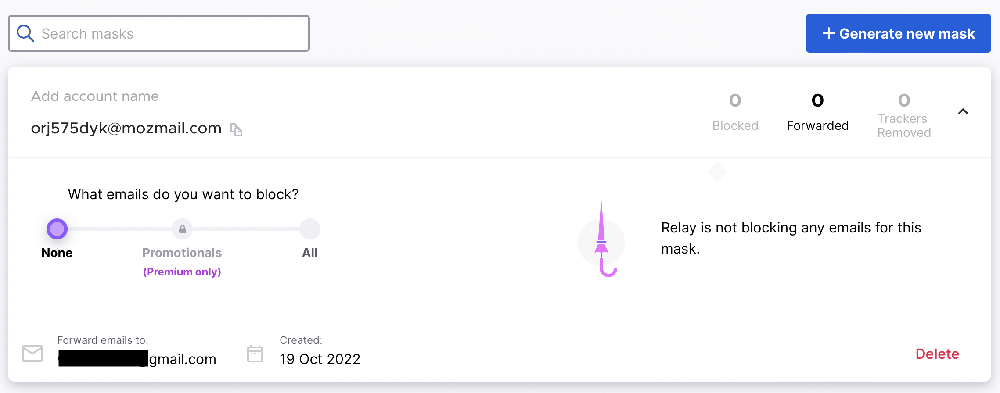
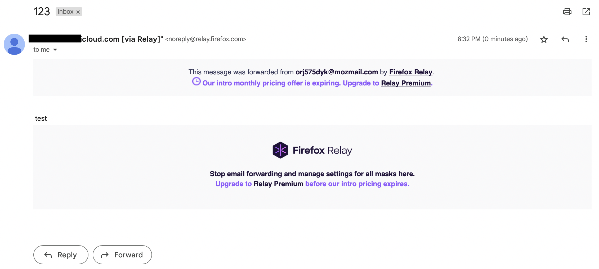

Um endereço de e-mail é, e permanece, o identificador mais comum para uma conta na rede. Você pode não ter um número de telefone, mas deve ter uma caixa de correio - esta é uma regra não escrita.
A presença de um e-mail por si só revela algumas informações sobre você. Em primeiro lugar, temos o alias, o nome da caixa, à esquerda do símbolo "@". O primeiro e mais óbvio conselho é não escolher suas iniciais, sobrenome ou ano de nascimento como nome de e-mail, a menos que seja uma caixa de correio puramente pessoal ou de trabalho.
A segunda dica, mas importante, é estudar cuidadosamente o provedor de e-mail. Os serviços de e-mail gratuitos mais conhecidos "perseguem" o e-mail, oferecendo contas em outros produtos. Isso é especialmente verdade para o Google e o Yandex, pois essas empresas atuam em várias outras áreas e, ao fornecer uma caixa de correio gratuita, você se torna um consumidor passivo de dezenas de outros serviços - seu ganha-pão.
Para dificultar a obtenção de informações sobre você, é recomendável usar os endereços de e-mail com sabedoria, aproveitando a capacidade técnica de criar variações. De acordo com os RFCs, após o alias e antes do sinal "@", você pode especificar um sufixo adicional com "+", por exemplo, apelido+facebook@google.com. E-mails enviados para esse endereço de e-mail serão entregues ao proprietário de apelido@google.com, mas do ponto de vista dos sites, ele será considerado um endereço de e-mail completamente diferente. Além disso, o Google trata os pontos no alias como opcionais e eles funcionam como sufixos após o "+".
Existem várias maneiras de usar: um endereço de e-mail exclusivo para cada serviço, um endereço de e-mail exclusivo para cada "personalidade" ou usar apenas para alguns serviços de acordo com um esquema conhecido apenas por você.
Os benefícios adicionais do uso de sufixos e pontos são descritos aqui. Você também pode usar a ferramenta mailto_analyzer para analisar a exposição do seu endereço de e-mail.
Também vale a pena mencionar o hábito de muitas pessoas de usar uma caixa de correio separada para serviços não críticos e várias inscrições de spam. A separação de caixas de correio em si é útil, mas apenas quando feita de forma consciente (veja acima).
Se você não verifica essa caixa de correio e lá estão milhares de mensagens não lidas, este é um sinal importante: reveja se você realmente precisa dessa caixa de correio. Se não, cancele a inscrição em todas as listas de envio e exclua as contas associadas a ela, para minimizar a possibilidade de usar este endereço de e-mail para coletar informações sobre você.
Existem muitos serviços que oferecem caixas de correio descartáveis que duram de 10 a 15 minutos. Elas são úteis para registros únicos em sites que você está visitando pela primeira vez e provavelmente não usará novamente. Nesta seção, consideraremos serviços criados em domínios aleatórios.
Serviços que geram aliases com aparência realista (primeiro nome. sobrenome):
Outros serviços populares:
Na internet, você também pode encontrar serviços que permitem o uso de seu alias para uma caixa de correio temporária. Esses endereços de e-mail são convenientes para serviços em que o e-mail deve parecer legítimo.
Exemplos de tais serviços:
Serviços que permitem o encaminhamento de e-mails usam os chamados "máscaras" para ocultar seu verdadeiro endereço de e-mail.
O princípio de funcionamento é muito simples:
Exemplo com base no Firefox Relay:
Primeiro, é fornecida uma máscara que oculta o endereço real.

Agora, usando este endereço mascarado, você pode receber e-mails no seu endereço de e-mail sem revelá-lo a toda a internet.

A Apple oferece a seus usuários a oportunidade de usar caixas de correio anonimizadas que funcionam da mesma maneira. Eles se parecem com isso: 1v5zvsmkp6@privaterelay.appleid.com.
A seção será atualizada
Exemplos de serviços:
*@ivanov.anonaddy.commozmail.com*.ivanov@erine.email